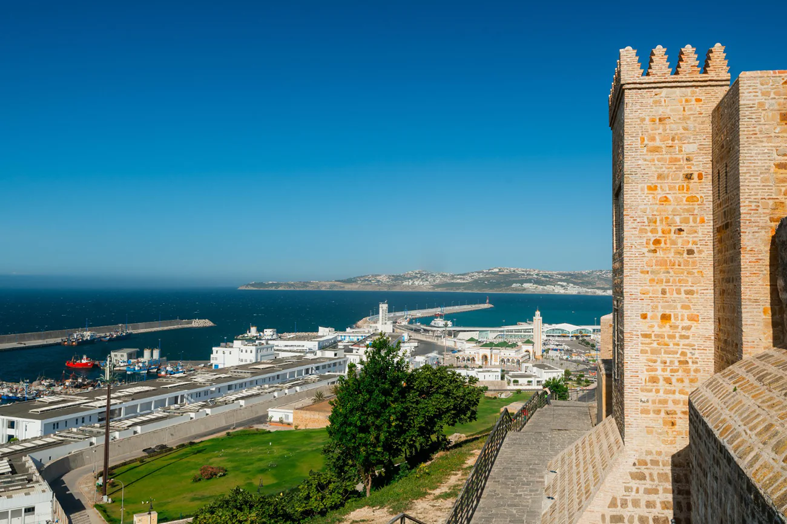
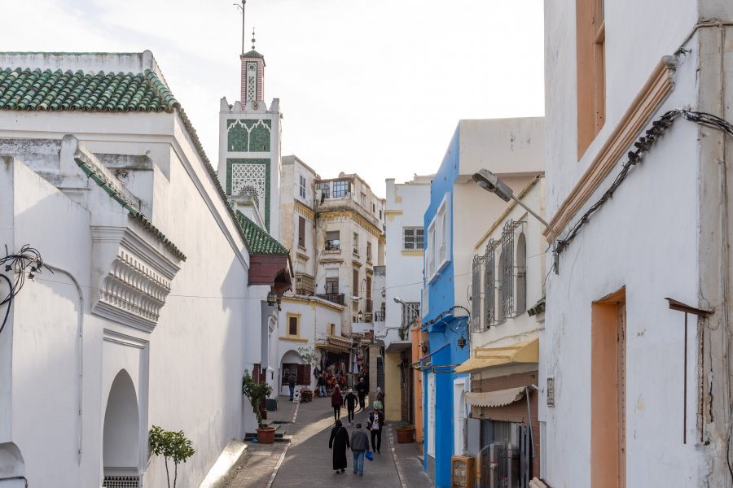
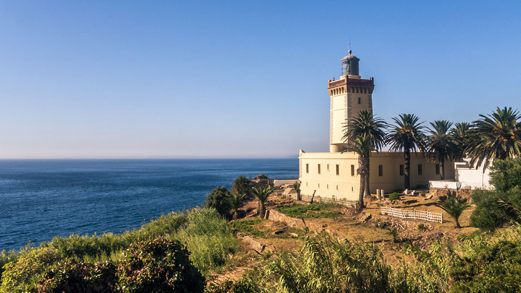
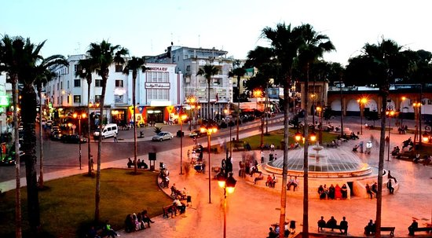

À propos de Tanger
Tanger est une ville portuaire stratégique, située au nord du Maroc, à la croisée de l’Europe et de l’Afrique. Connue pour sa Médina, ses plages et sa culture cosmopolite, elle attire les visiteurs par son charme historique et sa modernité.
Faits rapides
- Population: ~1M
- Région: Tanger-Tétouan-Al Hoceima
- Langues: Arabe, Français, Espagnol
- Climat: Méditerranéen, étés chauds et hivers doux
Culture
Tanger est réputée pour sa culture cosmopolite, mélange de traditions marocaines et influences européennes. La ville a inspiré de nombreux artistes, écrivains et musiciens. Sa Médina, ses cafés, et ses festivals en font un lieu vivant et culturellement riche.
Tanger est aussi un centre artistique et littéraire historique, ayant accueilli des écrivains célèbres comme Paul Bowles et Jean Genet.
Artisanat
Tapis, poterie et objets traditionnels marocains.
Musique & Festivals
Festival de Tanjazz et manifestations artistiques locales.
Plages
Corniche, sable doré et activités nautiques.
Gastronomie
Cuisine méditerranéenne et spécialités locales de poissons et fruits de mer.
Sites incontournables

Kasbah de Tanger
Ancienne forteresse avec vues panoramiques sur le détroit de Gibraltar et la Médina.

Médina de Tanger
Labyrinthe de ruelles, marchés et places historiques avec cafés et boutiques artisanales.

Cap Spartel
Point de rencontre entre l’océan Atlantique et la mer Méditerranée, célèbre pour son phare.

Grottes d’Hercule
Cavernes légendaires avec ouverture sur l’océan, site mythique et touristique.

Grand Socco
Place animée, centre névralgique de la ville avec cafés, commerces et monuments historiques.
.png)
Petit Socco
Petite place historique de la Médina, ancien lieu de rencontre pour intellectuels et écrivains.